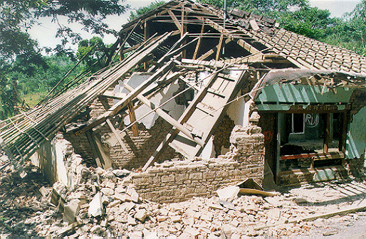
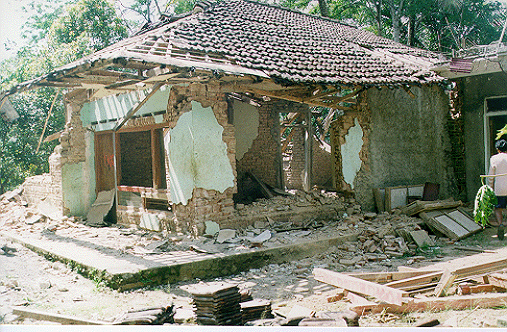
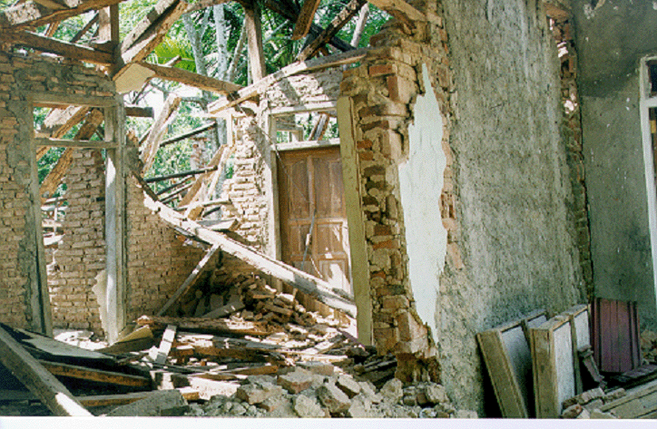

GEMPA BUMI MAJALENGKA (2001)
| Tampak depan rumah yang rusak parah di Desa Lampuyang
Kecamatan Talaga  |
Tampak samping. Di sisi kanan adalah rumah yang lebih
baru dan mengikuti kaidah pembangunan rumah sehingga lebih tahan terhadap gempa  |
Dinding dan bukaan tidak diperkuat dengan kolom praktis, sehingga tidak dapat menahan gaya lateral. Pemasangan bata juga nampak tidak teratur  |
|